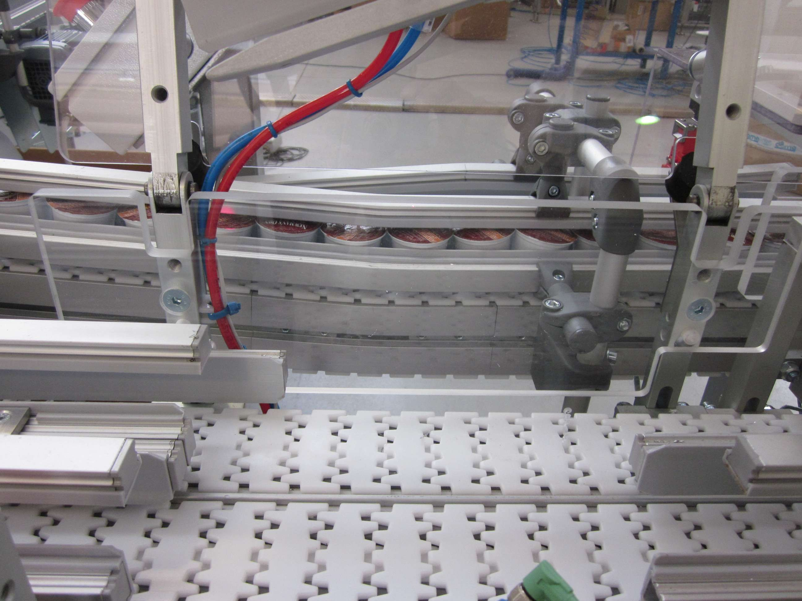

Codice interno: TR-RUL-01

I trasportatori a rulli sono ideali per la movimentazione di scatole, pallet e carichi pesanti. Disponibili in versione motorizzata o a gravità, garantiscono scorrevolezza e robustezza.
Progettiamo trasportatori a rulli su misura.
Contattaci